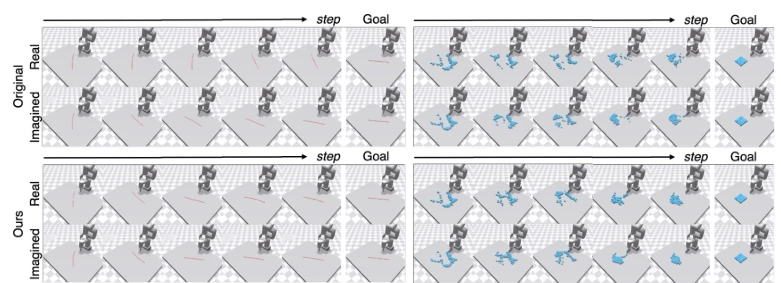
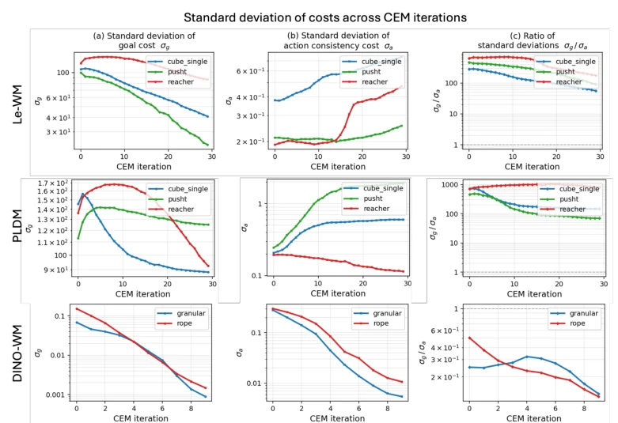
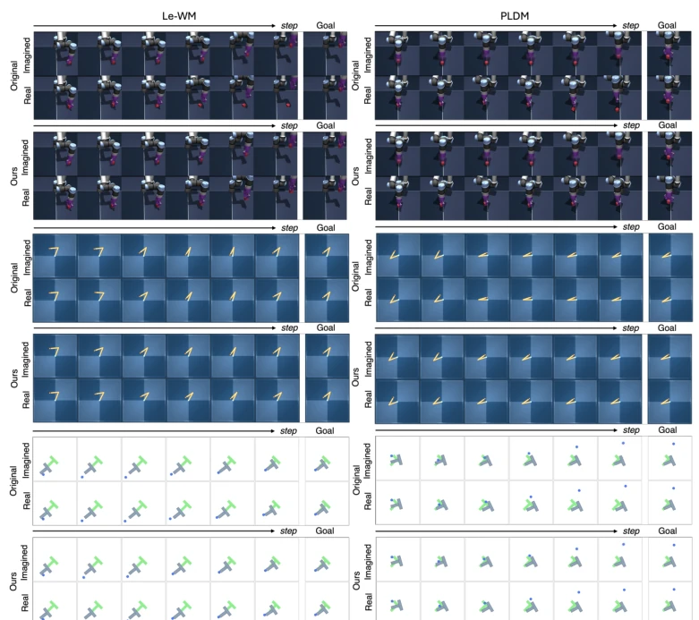
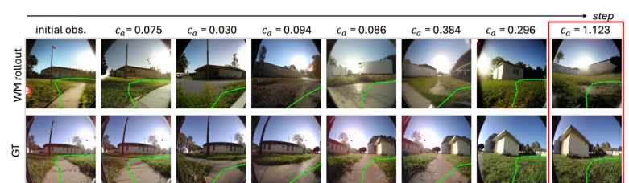

This paper delivers a dose of cold water to world model planners that only focus on the endpoint. Traditional MPC planning is often deceived by seemingly beautiful trajectories; the endpoint is reached, but the intermediate process is full of hallucinations. The ACID approach is quite clever, pulling the Inverse Dynamics Model (IDM) from behind-the-scenes training tool to the front as a referee, checking if every step action can truly drive state transitions. Although adding a verifier adds some overhead, the authors cleverly balance the goal cost and consistency cost using adaptive weights, resulting in not only stability but also reduced computation. However, this method is somewhat vulnerable in partially observable environments, as it relies on inferring actions from consecutive frames; if sensors are obscured or external forces interfere, this consistency check becomes rendered ineffective. Overall, it is a low-cost, high-reward patch suitable for teams that do not want to retrain world models but wish to improve planning robustness.
In embodied decision-making, decision-time planning based on action-conditioned world models has become mainstream [2, 4]. However, existing planning cost functions typically only penalize the distance between the terminal state and the goal, completely ignoring the realizability of intermediate state transitions. This implies that the planner may select a trajectory that can perfectly reach the endpoint in the model but drifts in the real environment due to dynamics mismatch. Although recent work attempts to improve this by scaling up video generation models [2, 3, 12] or introducing guidance mechanisms [19, 20], this either incurs high training costs or relies on specific probabilistic assumptions, and fails to solve the problem that the planning cost itself cannot distinguish between hypothetical endpoints and truly reachable ones. ACID aims to directly verify action fidelity through decision-time mechanisms without retraining the world model, filling this blind spot.
The ACID framework introduces cycle action consistency as an additional cost during the decision-time planning phase. The overall process is as follows: First, the encoder encodes observations into latent states, and the world model F_theta autoregressively predicts latent trajectories based on candidate action sequences. Next, an independent Inverse Dynamics Model (IDM) G_phi is introduced as a verifier, which receives predicted adjacent latent states and infers the actions required to produce this transition. Then, the residual between the inferred action and the original conditional action is calculated and aggregated into an action consistency cost. Finally, the consistency cost is combined with the traditional goal cost and weighted using adaptive weights. This weight is dynamically adjusted based on the distribution standard deviation of the two costs within the candidate set, ensuring balanced influence of both in elite selection, avoiding the poor generalization of fixed weights across different tasks or models. The IDM adopts a Flow Matching architecture, requiring only single-step Euler integration at inference, with minimal overhead.
Experiments cover 4 action-conditioned world models (Le-WM, PLDM, DINO-WM, NWM) and 6 tasks (rigid/deformable manipulation, joint control, visual navigation). Evaluation metrics include success rate, Chamfer distance, and trajectory error. Results show that ACID outperforms the baseline using only goal cost across all models and tasks, for example, Le-WM success rate improved by 12% on the Reacher task. Qualitative analysis indicates that ACID effectively filters trajectories that appear reachable in model prediction but drift in real rollout. In terms of efficiency, although IDM inference overhead is added, due to faster planning convergence, the total computation required to achieve equal quality is actually reduced, with some tasks requiring only 1/10 of the baseline sample size. Ablation experiments confirm that adaptive weights are more robust than fixed weights.
其他图片Other Figures

Figure 3: Qualitative comparison on the Rope and Granular. For each task, we show the real rollout in the environment and the corresponding imagined rollout from the world model under the planned action sequence.

Figure 6: Within-pool spread of the goal cost and action consistency cost. Rows are world models (Le-WM, PLDM, DINO-WM); columns show the within-pool standard deviations σg (a) and σa (b) and their ratio σg/σa (c) on a log-scaled y-axis, with one curve per task. Each point is the median over all pools at that CEM iteration. The dashed line at σg/σa = 1 marks equal within-pool spread.

Figure 7: Qualitative comparison on Le-WM and PLDM across the OGBench-Cube, Reacher, and Push-T tasks. Le-WM is shown in the left column and PLDM in the right column. For each model and task, we show the real rollout in the environment and the corresponding imagined rollout from the world model under the planned action sequence, comparing the baseline with the baseline with ACID.

Figure 8: Qualitative results on goal-conditioned visual navigation. Comparison between ground- truth frames and world model rollouts. The action consistency score from ACID (top) and navigation trajectories (green) are presented together. Red box highlights the step where the action consistency cost drops; at this step, the predicted next frame fails to follow the action condition.